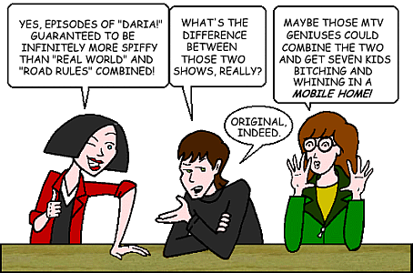

|
Characters & Episodes  |
|
Each episode page includes a complete summary of the plot, the cast members appearing in the episode, interesting tidbits, memorable quotes, and a review of the episode by Mike Quinn. His reviews were quite popular on the alt.tv.daria Usenet newsgroup and the various Daria message boards, as they provided a viewpoint on the major themes and events of the episode from the perspective of an "Average Joe" viewer, and I am privileged to present them here for your enjoyment.
Note: The number appearing next to the title of an episode indicates the production number assigned to the episode by MTV. The first digit indicates the season, and the remaining digits indicate the episode number within that season. For example, episode #513 ("Boxing Daria") is the thirteenth episode of the fifth season. If a title does not have a production number, it is a stand-alone production (i.e. a movie or the pilot episode). |
|
Characters |
|
|---|---|
|
The Morgendorffers |
Daria,
Helen,
Jake,
Quinn |
|
The Lanes |
Jane,
Trent,
Amanda,
Vincent,
Penny,
Summer,
Wind,
Courtney,
Adrian
|
|
Other Families |
The Barksdales:
Amy,
Rita
The Guptys: Lester, Lauren, Tad, Tricia The Sloanes: Tom, Angier, Katherine, Elsie The Yeagers: Coyote, Willow, Ethan |
|
Lawndale High Students |
Andrea,
Brittany,
Jodie,
Kevin,
Mack,
Upchuck
The Fashion Club: Sandi, Stacy, Tiffany The Three J's: Joey, Jeffy, Jamie |
|
Lawndale High Faculty |
Ms. Barch,
Mrs. Bennett,
Ms. Defoe,
Mr. DeMartino,
Ms. Li,
Mrs. Manson,
Mr. O'Neill
|
|
Mystik Spiral |
Jesse Moreno,
Nick Campbell,
Max Tyler
|
|
Notable Guest Characters |
Alison,
Artie,
Axl,
Brian Danielson,
Brooke,
Claude,
Daniel Dotson,
David Sorenson,
Erin Chambers, General Buck Conroy, Mrs. Johannsen, Lindy, Luhrman, Marianne, Monique, Romonica DeGregory, Ted DeWitt-Clinton, Tommy Sherman |
|
Miscellaneous |
Daria on Beavis and Butt-head Character Voices (listed by character) Character Voices (listed by actor) |
|
Episodes & Movies (arranged in production order) |
||||||||||||||||||||||||||||||||||||
|---|---|---|---|---|---|---|---|---|---|---|---|---|---|---|---|---|---|---|---|---|---|---|---|---|---|---|---|---|---|---|---|---|---|---|---|---|
|
||||||||||||||||||||||||||||||||||||